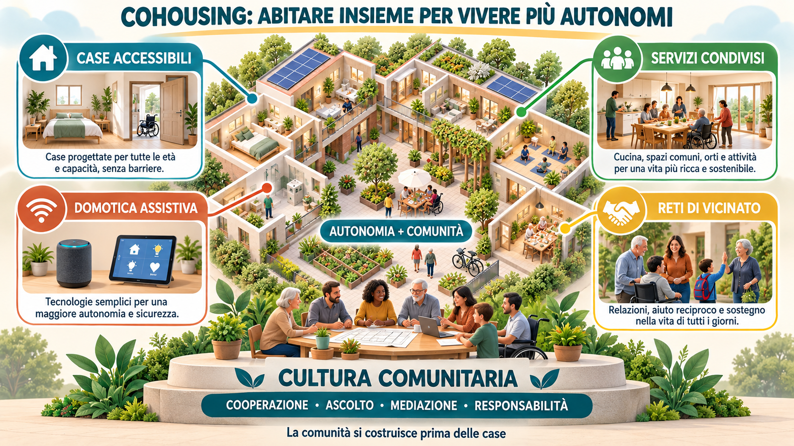

Il cohousing viene spesso presentato come una soluzione innovativa per contrastare la solitudine, sostenere l’autonomia e rendere più accessibili alcuni servizi. Ma prima di immaginare nuovi edifici, appartamenti senza barriere e spazi condivisi, dovremmo porci una domanda più impegnativa: siamo davvero preparati a vivere insieme?
La casa non è soltanto lo spazio nel quale abitiamo. È il luogo dal quale dipendono una parte importante della nostra autonomia, la possibilità di coltivare relazioni e, spesso, la qualità della nostra vita.
Eppure continuiamo a organizzare le abitazioni secondo un modello prevalentemente individuale. Ogni famiglia vive nel proprio appartamento, acquista separatamente gli stessi servizi e affronta da sola molte difficoltà quotidiane. Si può abitare per decenni nello stesso edificio senza conoscere davvero le persone che vivono sul pianerottolo accanto.
Questo modello mostra sempre più chiaramente i propri limiti. Le famiglie sono diventate più piccole, molti figli vivono lontano dai genitori, aumenta il numero delle persone anziane sole e cresce il desiderio delle persone con disabilità di costruire una vita indipendente dalla famiglia di origine.
Il cohousing può rappresentare una risposta concreta, ma non può essere ridotto a una formula immobiliare.
Vivere vicini non significa essere una comunità
L’esperienza dei nostri condomìni dovrebbe metterci in guardia. La semplice vicinanza non produce automaticamente solidarietà e collaborazione. Al contrario, quando mancano senso civico, disponibilità al dialogo e responsabilità condivisa, può amplificare contrasti, insofferenze, rivalità e piccole vanità personali.
Le assemblee condominiali diventano spesso luoghi nei quali ciascuno difende il proprio interesse immediato e ogni decisione comune viene vissuta come una limitazione della libertà individuale.
Il cohousing richiede un passaggio culturale più profondo. Non domanda alle persone di rinunciare alla propria individualità, ma di riconoscere che una parte del benessere personale dipende anche dalla qualità delle relazioni e dalla cura di ciò che è comune.
Questa disposizione non nasce improvvisamente quando si diventa anziani, quando sopraggiunge una disabilità o quando la solitudine comincia a pesare. Deve essere coltivata nel tempo attraverso l’educazione alla cooperazione, all’ascolto, alla mediazione dei conflitti e all’assunzione di responsabilità.
Per questo la spinta più importante verso il cohousing deve provenire dalle persone. Le istituzioni, le cooperative e i progettisti possono creare opportunità e mettere a disposizione strumenti, ma nessuna comunità può essere costruita soltanto dall’esterno.
Un progetto di cohousing dovrebbe prevedere, prima ancora dell’ingresso nelle abitazioni, un percorso di conoscenza tra i futuri residenti. Servono regole costruite insieme, strumenti per affrontare i contrasti, momenti di verifica e figure capaci di facilitare la convivenza.
Se continueremo a considerare la casa esclusivamente come un rifugio individuale e ogni rapporto con i vicini come una possibile invasione, sarà difficile sviluppare forme nuove dell’abitare. E potremmo comprenderne l’importanza soltanto quando l’isolamento, l’età o una condizione di fragilità ci costringeranno a cercare in fretta quella rete di relazioni che non abbiamo preparato.
Un sistema di vita, non una struttura assistenziale
Il cohousing è un insieme di abitazioni private e indipendenti inserite in un progetto residenziale comune.
Ogni persona o nucleo familiare conserva il proprio spazio, la propria intimità e la libertà di organizzare la vita quotidiana. Accanto agli appartamenti vengono però progettati ambienti e servizi condivisi: una sala comune, una cucina più grande, una lavanderia, un giardino, un orto, uno spazio per gli ospiti, per il lavoro o per alcune attività assistenziali.
La condivisione non deve essere imposta. Si può scegliere di mangiare insieme oppure restare nella propria abitazione, partecipare a un’attività comune o trascorrere la giornata per conto proprio. Ciò che conta è sapere di non essere soli davanti a ogni difficoltà.
Il valore del cohousing nasce proprio dall’equilibrio tra autonomia personale e vita comunitaria.
Essere autonomi, infatti, non significa essere capaci di fare tutto da soli. Significa poter decidere come vivere, mantenere il controllo sulla propria quotidianità e ricevere i sostegni necessari senza rinunciare alla libertà e alla dignità.
Il cohousing non dovrebbe quindi trasformarsi in una struttura assistenziale mascherata, né in un luogo separato nel quale concentrare persone considerate fragili. Deve rimanere una scelta abitativa aperta e inclusiva.
Un’idea contemporanea con radici antiche
Per alcuni aspetti il cohousing ripropone, in forme moderne, modalità di vita che appartengono alla nostra storia.
Nelle vecchie case coloniche e nei piccoli insediamenti del contado, diversi nuclei familiari disponevano dei propri spazi, ma condividevano una parte del lavoro, gli strumenti, la cura degli ambienti e numerosi momenti della vita quotidiana. La prossimità generava relazioni, solidarietà, regole e responsabilità reciproche.
Non dobbiamo idealizzare quel mondo, spesso segnato da povertà, fatica e limitata libertà individuale. Possiamo però recuperarne un’intuizione: la vita diventa più sostenibile quando alcune risorse vengono messe in comune e le persone non vengono lasciate sole davanti a ogni necessità.
Il cohousing moderno può rigenerare questa esperienza garantendo ciò che in passato spesso mancava: libertà di scelta, abitazioni indipendenti, tutela della vita privata, accessibilità, servizi qualificati e tecnologie capaci di sostenere l’autonomia.
Agricoltura Nuova: rigenerare l’esperienza delle case coloniche
In questa prospettiva assume particolare interesse il progetto CARe – Comunità Agricola Residenziale, promosso nell’Agro romano dalla Cooperativa Agricola Sociale Agricoltura Nuova, socia della Fondazione COINSIEME.
Agricoltura Nuova nasce da un’esperienza nella quale lavoro agricolo, difesa del territorio, cooperazione e relazioni sociali sono cresciuti insieme. Oggi prova a mettere a disposizione la rete di rapporti umani, lavorativi e commerciali costruita nel tempo per sviluppare un progetto di Silver CoHousing agricolo.
L’iniziativa ripropone in chiave contemporanea una parte dell’esperienza residenziale delle case coloniche: abitazioni autonome inserite in un contesto comune, relazione con la terra, attività condivise, scambio di conoscenze e collaborazione tra generazioni.
Non si tratta di ricostruire nostalgicamente il passato, ma di trasformare un patrimonio agricolo, immobiliare e relazionale in una risorsa per il presente.
La dimensione rurale può offrire spazi, rapporto con la natura, attività agricole, occasioni di socialità e possibilità di partecipazione. Gli abitanti non sono considerati semplicemente destinatari di assistenza, ma persone che possono continuare a contribuire alla vita della comunità attraverso esperienze, competenze e interessi.
È un progetto che merita di essere conosciuto e sostenuto, non come modello da replicare in modo identico ovunque, ma come esperienza dalla quale imparare.
Una prospettiva per anziani e persone con disabilità
Il cohousing può contribuire anche ai progetti di vita autonoma delle persone con disabilità.
Questo non significa assimilare disabilità e vecchiaia, che comportano bisogni, desideri e percorsi differenti. Il punto comune è la possibilità di vivere in una casa propria, all’interno di un ambiente accessibile e sicuro, potendo contare su relazioni e sostegni scelti.
Le residenze esistenti possono essere recuperate e adattate. Le nuove costruzioni dovrebbero invece essere concepite fin dall’inizio con appartamenti accessibili e modificabili nel tempo, percorsi privi di barriere, spazi comuni, aree verdi e collegamenti agevoli con i servizi e i trasporti.
Una casa ben progettata può ridurre il bisogno di aiuto. Una casa inaccessibile può trasformare una difficoltà in una condizione di dipendenza.
Domotica e servizi comuni
In un moderno cohousing, la domotica assistiva può diventare una vera infrastruttura dell’autonomia.
Porte, finestre, luci e tapparelle automatizzate, comandi vocali, sensori ambientali, sistemi di chiamata e teleassistenza possono consentire a una persona di svolgere autonomamente molte attività quotidiane.
La tecnologia deve però essere personalizzata, discreta e rispettosa della riservatezza. Non deve trasformare la casa in un ambiente sorvegliato né sostituire la relazione umana.
Anche alcuni servizi possono essere organizzati in comune: accompagnamento, trasporto, manutenzione, pulizia, consegna dei pasti e portierato sociale.
Una soluzione interessante è quella dell’assistente familiare di condominio, disponibile per più abitanti in orari programmati o in caso di necessità. Questo modello può offrire maggiore sicurezza, rendere più sostenibili i costi e qualificare meglio il lavoro di cura.
I servizi condivisi non devono sostituire i sostegni individuali previsti dal progetto di vita di ciascuna persona, ma integrarli e renderli più efficaci.
Le reti amicali accanto a quelle familiari
Nel nostro sistema sociale una parte enorme della cura continua a essere sostenuta dalle famiglie. Ma non possiamo presumere che i familiari siano sempre presenti, vivano nelle vicinanze o possano assumere indefinitamente ogni responsabilità.
Accanto alle reti parentali occorre riconoscere il valore delle amicizie e delle relazioni di vicinato.
Un gruppo di amici può scegliere di abitare nello stesso complesso, conservando case separate ma organizzando alcune forme di attenzione reciproca. Anche associazioni, cooperative e cittadini del quartiere possono contribuire alla vita della comunità.
Non si tratta di trasformare amici e vicini in assistenti non retribuiti. I bisogni assistenziali devono ricevere risposte professionali. Le relazioni informali possono però offrire ciò che nessun servizio riesce a programmare completamente: compagnia, fiducia, attenzione e senso di appartenenza.
Sostenere le comunità senza sostituirle
Non possiamo aspettarci che ogni risposta venga organizzata direttamente dal servizio pubblico. Cooperative, famiglie, gruppi di cittadini e comunità locali possono promuovere iniziative, mettere in comune risorse e sperimentare soluzioni nuove.
Questo non deve però diventare un alibi per l’arretramento delle istituzioni.
Al soggetto pubblico spetta garantire i diritti, sostenere le persone che non dispongono di risorse economiche, mettere a disposizione immobili e aree, semplificare le procedure e accompagnare l’avvio dei progetti.
Molte esperienze innovative rischiano infatti di fermarsi proprio nella fase iniziale. Servono strumenti finanziari dedicati, accordi con gli enti locali e collaborazioni tra settore pubblico, cooperazione, Terzo Settore e investitori responsabili.
Il contributo di COINSIEME
Come Fondazione COINSIEME riteniamo che il cohousing possa entrare pienamente nella progettazione della vita autonoma.
Il nostro contributo può riguardare l’accessibilità delle abitazioni, la domotica assistiva, l’organizzazione dei servizi di prossimità e la costruzione di reti tra persone, famiglie, cooperative e istituzioni.
Ma la tecnologia, i servizi e gli edifici non saranno sufficienti senza una crescita della nostra cultura comunitaria.
La sfida non è costruire semplicemente nuove residenze. È imparare a condividere ciò che può essere comune, rispettando ciò che deve rimanere personale. È educarci al confronto, alla mediazione e alla responsabilità reciproca prima che la solitudine o la fragilità rendano questa scelta urgente.
Perché l’autonomia non consiste nel vivere senza gli altri, ma nel poter scegliere liberamente come vivere insieme agli altri.